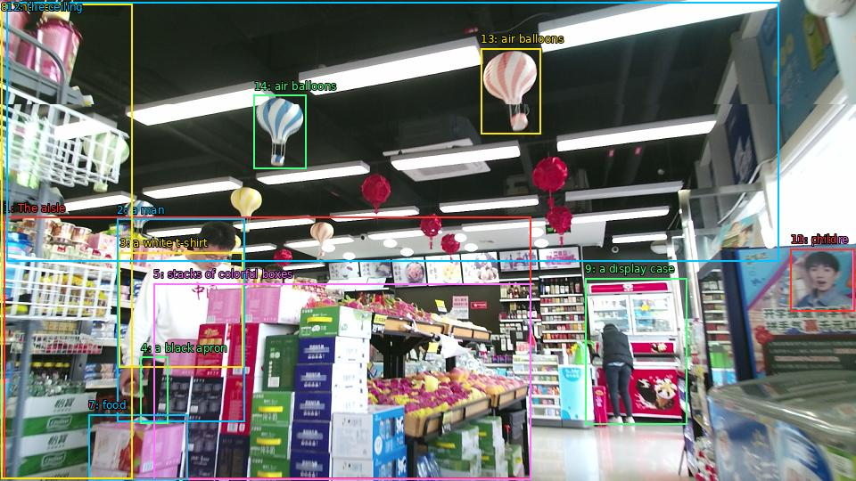

The image shows the interior of a supermarket aisle with a variety of items on display. The aisle is filled with shelves stocked with different types of food and drinks. On the left side of the image, there is a man wearing a white t-shirt and a black apron, standing in front of a counter with stacks of colorful boxes and bags of food. He appears to be sorting through the items on the counter. In the background, there are shelves with more items and a display case with a picture of a child on it. Above the man, the ceiling is decorated with colorful hot air balloons in shades of pink, blue, and yellow. The overall atmosphere of the store is bright and cheerful.

Original · Caption raw · Grounding raw · Koordinate
Številke so lokalni ID regije. Dolge slikovne oznake so skrajšane; spodaj so celotne fraze. Napovedane regije se lahko prekrivajo ali opisujejo skupine.
| ID | Celotna fraza | bbox xyxy |
|---|---|---|
| 1 | The aisle | [4.319999694824219, 243.8100128173828, 595.6799926757812, 537.5700073242188] |
| 2 | a man | [131.0399932861328, 245.9700164794922, 274.0799865722656, 473.8500061035156] |
| 3 | a white t-shirt | [133.9199981689453, 283.2300109863281, 272.1600036621094, 412.2900085449219] |
| 4 | a black apron | [157.9199981689453, 400.95001220703125, 188.63999938964844, 475.47003173828125] |
| 5 | stacks of colorful boxes | [172.3199920654297, 318.33001708984375, 595.6799926757812, 538.1100463867188] |
| 6 | bags | [99.36000061035156, 465.21002197265625, 209.75999450683594, 538.1100463867188] |
| 7 | food | [99.36000061035156, 465.21002197265625, 210.72000122070312, 538.1100463867188] |
| 8 | shelves | [1.4399999380111694, 4.050000190734863, 148.3199920654297, 537.5700073242188] |
| 9 | a display case | [656.1599731445312, 312.3900146484375, 770.3999633789062, 476.010009765625] |
| 10 | picture | [886.5599975585938, 279.45001220703125, 957.5999755859375, 349.1100158691406] |
| 11 | child | [886.5599975585938, 279.45001220703125, 958.5599975585938, 349.1100158691406] |
| 12 | the ceiling | [7.199999809265137, 2.430000066757202, 873.1199951171875, 293.4900207519531] |
| 13 | air balloons | [539.0399780273438, 54.27000045776367, 606.239990234375, 150.9300079345703] |
| 14 | air balloons | [284.6399841308594, 106.6500015258789, 343.1999816894531, 189.8100128173828] |